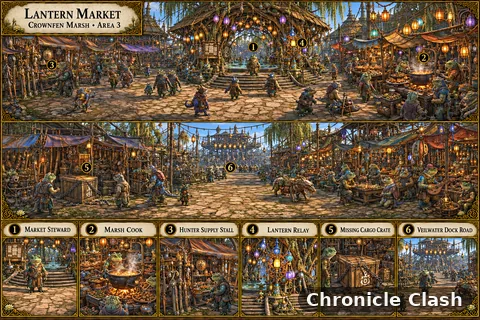
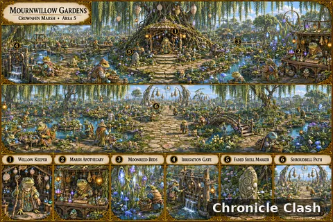
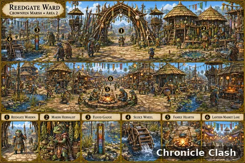
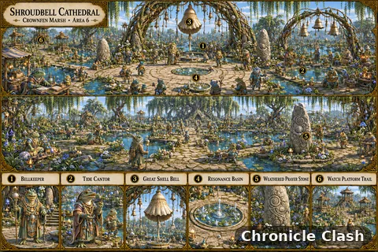
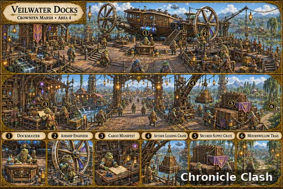

Gallery album
Panoramas
5 images. Select an image to view full size.

Panorama · Crownfen Marsh · Lantern Market (Area 3) 
Panorama · Crownfen Marsh · Mournwillow Gardens (Area 5) 
Panorama · Crownfen Marsh · Reedgate Ward (Area 2) 
Panorama · Crownfen Marsh · Shroudbell Cathedral (Area 6) 
Panorama · Crownfen Marsh · Veilwater Docks (Area 4)